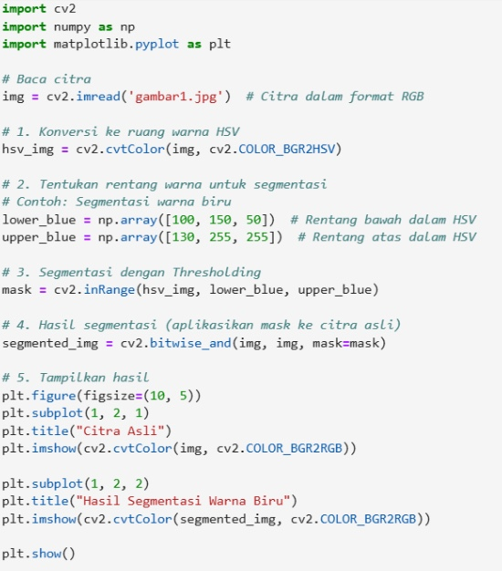

Pertemuan 7: PENERAPAN SEGMENTASI CITRA
Materi ini membahas penerapan Segmentasi Citra dalam Pengolahan Citra Digital
Sub-Topik:
- Segmentasi Citra Dengan Deteksi Tepi
- TSegmentasi Citra Berdasarkan Warna
Segmentasi Citra Dengan Deteksi Tepi
Segmentasi citra adalah proses memisahkan citra menjadi beberapa bagian yang saling terpisah berdasarkan karakteristik tertentu, seperti warna, intensitas, tekstur, atau tepi. Segmentasi digunakan dalam berbagai aplikasi, seperti pengenalan objek, deteksi tepi, dan pemrosesan citra medis. Deteksi tepi adalah teknik dalam pengolahan citra untuk menemukan batas atau perubahan tajam dalam intensitas piksel. Tepi adalah titik-titik di mana intensitas piksel berubah dengan cepat, dan biasanya mengindikasikan batas antara dua area objek yang berbeda di dalam citra.
Teknik Deteksi Tepi
- Operator Sobel, Operator Sobel adalah filter deteksi tepi yang menggunakan kernel konvolusi untuk menghitung gradien intensitas di setiap piksel. Menggunakan dua kernel 3x3: satu untuk arah horizontal (Gx) dan satu untuk arah vertikal (Gy). Gradien total dihitung dengan formula
- Operator Canny, Detektor tepi Canny adalah algoritma multi-tahap yang lebih kompleks, dirancang untuk mengurangi noise dan mendeteksi tepi yang lebih akurat. Langkah-langkah utama dalam Canny:Penghalusan citra (Gaussian Filter) untuk mengurangi noise. Menghitung gradien untuk menemukan intensitas dan arah perubahan. Non-maximum suppression untuk menghilangkan piksel yang bukan bagian dari tepi. Double thresholding untuk menentukan tepi kuat dan tepi lemah. Edge tracking by hysteresis untuk menghubungkan tepi yang kuat dan lemah.
- Operator Prewitt Mirip dengan operator Sobel, tetapi menggunakan kernel berbeda untuk deteksi tepi dalam arah horizontal dan vertikal. Operator ini sedikit lebih sederhana dan lebih cepat daripada Sobel, tetapi menghasilkan hasil yang kurang akurat dalam beberapa kasus.
Contoh Penerapannya Pada Python

Gambar 7.1: Kode Python & output Deteksi Tepi Python
Penjelasan kode:
- Citra dibaca dalam mode grayscale menggunakan cv2.imread().
- Citra dihaluskan menggunakan Gaussian blur untuk mengurangi noise.
- Sobel digunakan untuk menghitung gradien horizontal dan vertikal, kemudian digabungkan untuk mendapatkan magnitude total..
- Canny digunakan sebagai metode deteksi tepi yang lebih kompleks.
- Hasil deteksi tepi ditampilkan menggunakan Matplotlib.
Segmentasi Citra Berdasarkan Warna
Segmentasi warna dapat dilakukan dengan menggunakan ambang batas (threshold) atau metode lain seperti clustering untuk mengelompokkan piksel yang memiliki kesamaan warna. Segmentasi Warna Sederhana dengan Thresholding di Ruang Warna RGB, Pada segmentasi warna berbasis thresholding, kita menetapkan rentang nilai RGB atau HSV untuk memilih bagian citra yang ingin disegmentasi. Segmentasi Warna di Ruang Warna HSV , Metode ini sering lebih efisien karena rentang hue, saturation, dan value bisa lebih mudah diatur untuk menangkap variasi warna yang relevan. Segmentasi Warna Menggunakan K-Means Clustering, K-Means clustering adalah algoritma yang digunakan untuk mengelompokkan piksel menjadi beberapa kelompok (cluster) berdasarkan warna. Ini cocok untuk situasi di mana kita tidak tahu rentang warna yang tepat di awal.
Langkah-langkah Segmentasi Warna
- Pra-pemrosesan dan penghalusan Citra: Menggunakan filter Gaussian untuk mengurangi noise .Konversi Ruang Warna: Konversi dari ruang warna RGB ke HSV (jika diperlukan).
- Segmentasi dengan Thresholding: Tentukan rentang nilai warna (dalam RGB atau HSV) untuk objek yang ingin disegmentasi dan gunakan threshold untuk memisahkan objek berdasarkan nilai warna tersebut.
- Pengolahan Setelah Segmentasi seperti morphological Operations: Gunakan operasi dilasi atau erosi untuk menyempurnakan hasil segmentasi (misalnya, untuk menghilangkan noise atau menghubungkan area yang terpisah).
Contoh Penerapannya Pada Python
Gambar 7.2: Kode Python Segmentasi Warna

Gambar 7.3: Output Python Segmentasi Warna
Penjelasan kode:
- Konversi Ruang Warna: Citra asli dikonversi dari ruang warna RGB ke HSV.
- Thresholding: Rentang warna biru (dalam ruang warna HSV) digunakan untuk membuat mask yang akan mengisolasi bagian citra yang memiliki warna biru.
- Aplikasi Mask: Mask diterapkan pada citra asli untuk menghasilkan citra yang hanya menunjukkan bagian yang disegmentasi.